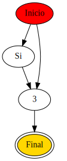
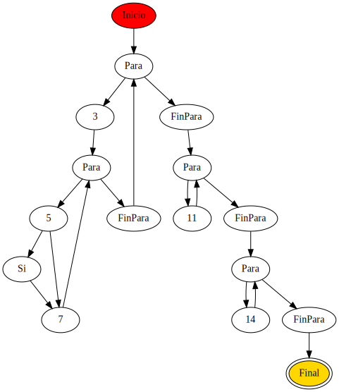
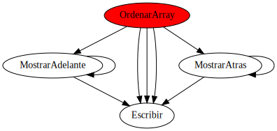

Informe de PL3-Ej3.psc
FUNCIÓN MostrarAdelante(V, datosquehay, mostrarahora):void
- Complejidad ciclomática V(G): 2
- Puntos función: 52
- Resumen:
- Variables declaradas: 0
- Líneas de código efectivas: 4
- Número de parámetros esperados: 3
- Número de llamadas a funciones: 2
- Gráfico de complejidad ciclomática:

FUNCIÓN MostrarAtras(V, datosquehay, mostrarahora):void
- Complejidad ciclomática V(G): 2
- Puntos función: 52
- Resumen:
- Variables declaradas: 0
- Líneas de código efectivas: 4
- Número de parámetros esperados: 3
- Número de llamadas a funciones: 2
- Gráfico de complejidad ciclomática:
PROGRAMA OrdenarArray
- Resumen:
- Complejidad ciclomática completa del fichero: 10
- Puntos función totales: 1679766
- Líneas de código efectivas totales: 37
- Complejidad ciclomática V(G) del programa OrdenarArray: 6
- Puntos función del programa OrdenarArray: 1679662
- Líneas de código efectivas del programa OrdenarArray: 29
- Gráfico de complejidad ciclomática del programa OrdenarArray:

- Gráfico de llamadas a funciones de la función OrdenarArray:
